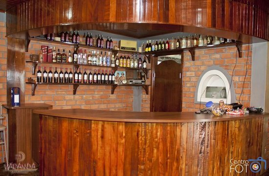

Meu restaurante está localizado em Irati Paraná perto do centro, um grande salão, com várias cadeiras e mesas com vários lixeiros organizado e personalizado, vários funcionários para poder te atender o cardápio variado.
Este restaurante ira abrir das oito horas da manhã e vou fechar as oito da noite ira fica aberto de segunda a sábado, vai ter vários tipos de carne de bovinos e suínos como costela, cupim, colchão mole, etc. As formas de pagamento será débito, crédito, pix, e dinheiro.
A entrada vai ser bem decorada com diferentes tipos de cores, etc vai ser uma coisa bem rupestre, as cadeiras Serão metade bancos de madeira e a outra de ferro a parte de madeira vai ser no ar livre em baixo de árvores para fazer sombra para ser mais natural e a outra parte sera telhado coberto para quando chover não se molhar, as paredes do restaurante serão marrom para não ficar muito chamativa para não ficar feio.
;